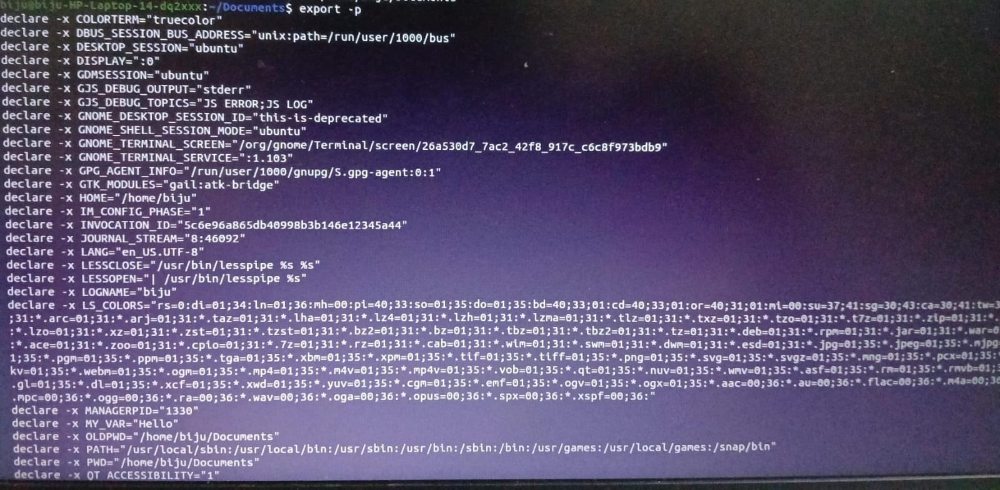

Linux Commands Showcase
Click on the commands above to learn more about them.
sort
Sort command is used to sort lines of text files.
Purpose
Sort lines of text files in ascending or descending order.
Usage
sort [OPTION]... [FILE]...Examples
Sort a file in ascending order:
sort filename.txtSort a file in descending order:
sort -r filename.txtIllustration
awk
awk is a powerful programming language for pattern scanning and processing.
Purpose
Process and analyze text files using patterns and actions.
Usage
awk 'pattern { action }' filenameExamples
Print the second column of a file:
awk '{print $2}' filename.txtPrint lines containing a specific word:
awk '/word/' filename.txtIllustration
sed
sed is a stream editor for filtering and transforming text.
Purpose
Perform basic text transformations on an input stream (a file or input from a pipeline).
Usage
sed [OPTION]... {script-only-if-no-other-script} [input-file]...Examples
Replace a word in a file:
sed 's/oldword/newword/g' filename.txtDelete a line containing a specific word:
sed '/word/d' filename.txtIllustration
cut
cut removes sections from each line of files.
Purpose
Remove sections from each line of files based on a delimiter or byte position.
Usage
cut OPTION... [FILE]...Examples
Extract the first and third fields from a file:
cut -f1,3 filename.txtExtract characters 1-10 from each line:
cut -c1-10 filename.txtIllustration

tr
tr translates or deletes characters from a stream of text.
Purpose
Translate or delete characters from a stream of text based on specified sets.
Usage
tr [OPTION]... SET1 [SET2]Examples
Translate lowercase to uppercase:
tr 'a-z' 'A-Z'Delete specific characters:
tr -d 'a-z'Illustration
echo
echo is used to display a line of text or the value of a variable.
Purpose
Display a line of text or the value of a variable.
Usage
echo [OPTION] [STRING]Examples
Display a string:
echo "Hello, World!"Display the value of an environment variable:
echo $HOMEIllustration
export
export is used to set environment variables.
Purpose
Set environment variables that can be used by child processes.
Usage
export VARIABLE_NAME="value"Examples
Set a new environment variable:
export MY_VAR="Hello"Make the variable available to child processes:
export PATH=$PATH:/new/pathIllustration
history
history shows the history of commands entered in the current session.
Purpose
Display the command history.
Usage
history [n]Examples
Display the last 10 commands:
history 10Illustration
rsync
rsync is used for synchronizing files and directories between two locations.
Purpose
Synchronize files between local and remote systems.
Usage
rsync [OPTION] SOURCE DESTExamples
Sync a directory to a remote server:
rsync -av /local/dir user@remote:/remote/dirIllustration
screen
screen is used to create and manage multiple terminal sessions.
Purpose
Manage multiple terminal sessions from a single window.
Usage
screenExamples
Start a new screen session:
screenReattach to a screen session:
screen -rIllustration
uniq
uniq removes duplicate lines from a sorted file.
Purpose
Remove or report duplicate lines from a sorted file.
Usage
uniq [OPTION]... [INPUT [OUTPUT]]Examples
Remove duplicate lines from a sorted file:
uniq filename.txtDisplay only duplicate lines in a sorted file:
uniq -d filename.txtCount occurrences of each line in a sorted file:
uniq -c filename.txt